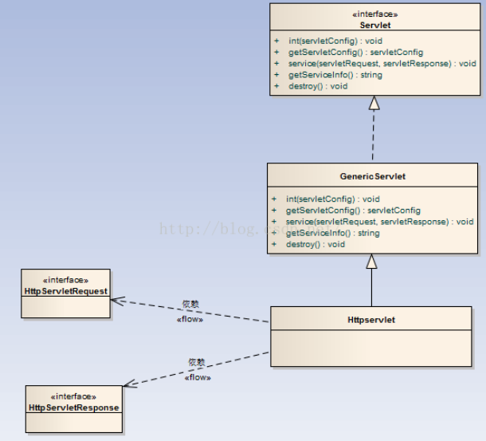
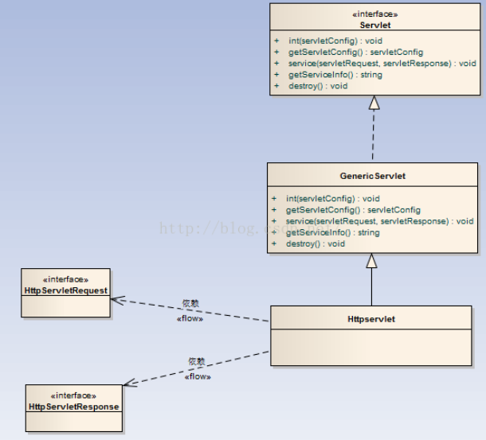

华师day03_pm
一、ServletContext
①：Servlet引擎为每个Web应用程序都创建一个对应的ServletContext对象，ServletContext对象被包含在ServletConfig对象中，调用ServletConfig.getServletContext方法可以返回ServletContext对象的引用。
②：由于一个Web应用程序中所有的Servlet都共享同一个ServletContext对象，所以，ServletContext对象被称之为application对象（Web应用程序对象）。
③：功能：
a、获取Web应用程序的初始化参数
Web应用的初始化参数的配置与servlet节点并列
<web-app>
<!--配置当前Web应用的初始化参数 -->
<context-param>
<param-name>db</param-name>
<param-value>mysql5.7</param-value>
</context-param>
ServletContext获取初始化参数方法：
getInitParameter(String name) ： 获取指定参数名的初始化参数
getInitParameterNames（）：获取参数名组成的Enumeration
二、我们访问的web应用程序 是tomcat服务 下 webapps目录中的
三、各个类及接口之间的关系
 
四、通过继承HttpServlet的方式创建自己的Servlet对象 重写方法 doGet 和 doPost方法来处理对应的业务
httpServlet:
如果需要在处理请求的时候（service方法中）处理http相关内容，如：获取请求的方式是get还是post，则需要将参数 ServletRequest 强制转换为 HttpServletRequest 进行处理。
可以定义一个针对于Http协议的一个Servlet基类，将service方法中参数转换为HttpServletRequest 和 HttpServletResponse。并且可以根据请求方式区分业务处理。----HttpServlet可以实现该功能，实际开发中，使用HttpServlet作为基类。
总结：
①：是一个Servlet，继承自GenericServlet，针对Http协议所制定。
②：在Service方法中，直接把ServletRequest和ServletResponse 转换为HttpServletRequest 和 HttpServletResponse，并调用了重载的service(HttpServletRequest , HttpServletResponse)
③：在service(HttpServletRequest , HttpServletResponse)中获取了请求方式，request.getMethod(),根据请求方式，创建了对应的方法：doGet 和 doPost
④：实际开发中，直接继承HttpServlet，并根据请求方式复写doXXX方法，直接使用HttpServletRequest 和 HttpServletResponse不需要再强转。
五、 请求对象request的常用方法
String path=request.getContextPath();//获得上下文路径
String uri=request.getRequestURI(); //获得这个请求的路径
request.getRequestDispatcher("/show.html").forward(request, response);//转发到别的页面显示。
①. 获取请求参数:
> String getParameter(String name): 根据请求参数的名字, 返回参数值.
若请求参数有多个值(例如 checkbox), 该方法只能获取到第一个提交的值.
> String[] getParameterValues(String name): 根据请求参数的名字, 返回请求参数对应的字符串数组.
> Enumeration getParameterNames(): 返·回参数名对应的 Enumeration 对象,
类似于 ServletConfig(或 ServletContext) 的 getInitParameterNames() 方法.
> Map getParameterMap(): 返回请求参数的键值对: key: 参数名, value: 参数值, String 数组类型.
②. 获取请求的 URI:
HttpServletRequest httpServletRequest = (HttpServletRequest) request;
String requestURI = httpServletRequest.getRequestURI();
System.out.println(requestURI); // /day_29/loginServlet
③. 获取请求方式:
String method = httpServletRequest.getMethod();
System.out.println(method); //GET
④. 若是一个 GET 请求, 获取请求参数对应的那个字符串, 即 ? 后的那个字符串.
String queryString = httpServletRequest.getQueryString();
System.out.println(queryString); //user=zhu&password=123456&interesting=game&interesting=party&interesting=shopping
⑤. 获取请求的 Serlvet 的映射路径
String servletPath = httpServletRequest.getServletPath();
System.out.println(servletPath); // /loginServlet
⑥. 和 attribute 相关的几个方法 （很重要 ，后面讲）
六、 HttpServletResponse 常用方法
HttpServletResponse : 封装了响应信息, 如果想给用户什么响应, 具体可以使用该接口的方法实现.
①. *getWriter(): 返回 PrintWriter 对象. 调用该对象的 print() 方法, 将把 print() 中的参数直接打印到客户的浏览器上.
②. 设置响应的内容类型: response.setContentType("application/msword");//word文档类型
③. void sendRedirect(String location): 请求的重定向. (此方法为 HttpServletResponse 中定义.) /代表是站点的目录 ：http://localhost:8080/
404 目标找不到
500 服务器内部错误
七、转发和 重定向
都可以将现在的业务转到另外的目录
不同：
1）转发是执行了一次请求
重定向是执行了两次请求。
2）地址栏显示的是 最初访问的目录
重定向：地址栏显示的目录是 最终页面的目录
3）转发 是服务器内部处理
重定向是浏览器又发送了一次请求
4）执行的对象不同 转发是请求对象request处理的
重定向是 response处理的。
5）代码不同
//将 请求信息转发到另外一个页面
request.getRequestDispatcher("/index.jsp").forward(request, response);//最终目录：myServlet
//重定向：重新向另外一个页面发送请求 /代表站点的目录
//response.sendRedirect(path+"/index.jsp");//最终目录 ：index。jsp
练习：
MySql数据库中 ，创建数据表 MyUser ：uid、uname、pwd，并添加测试数据。
1）定义一个login.html，定义表单：user、password 提交到 loginServlet
2）创建一个LoginServlet（继承自HttpServlet，并重写doPost方法）
3）在doPost方法中获取表单数据，并与数据库中数据核对
4）信息一致，则页面响应：登录成功 否则显示：用户名或密码错误。
JSP:
一、基本组成：
1）模板元素：html页面的内容
2）表达式：<%= 和 %>之中 展示Java内容
3）Java代码 <% %>
4)Java声明：<%！ %>
5）注释:<%-- 注释信息 --%>